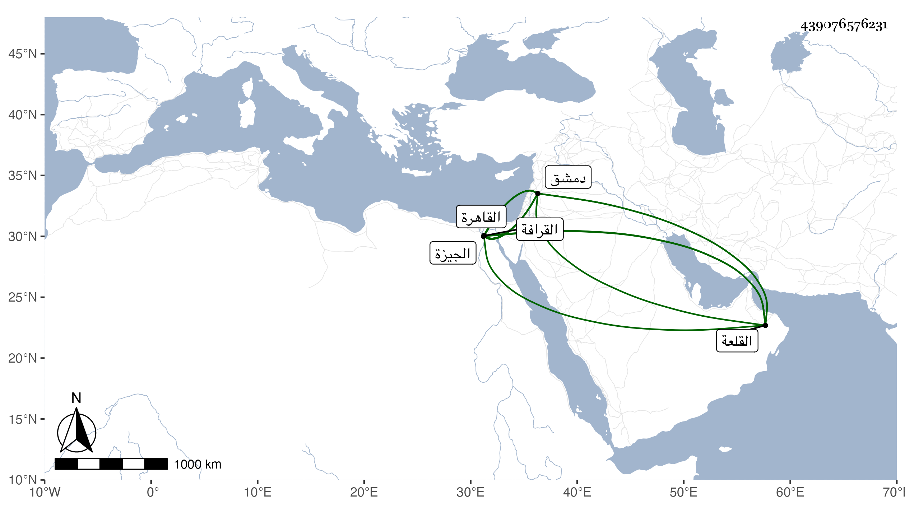

0902Sakhawi.DawLamic.ITO20230111-ara1.EIS1600.439076576231
Biography ID: 439076576231
234
محمد بن أحمد بن معالي الشمس الحبتي بمهلة ثم موحدة مفتوحتين ثم مثناه مشددة ورأيت من أبدل الموحدة ميما وقال إنه الصواب الدمشقي الحنبلي . ولد في ربيع الأول سنة خمس وأربعين وسبعمائة بدمشق وسمع بها من متأخري أصحاب الفخر كابن أميلة وكذا سمع من العماد بن كثير وغيره وتفقه بابن قاضي الجبل وابن رجب وغيرهما ، وتعانى الأدب فمهر ، وكان فاضلا مستحضرا مشاركا في الفنون . وقدم القاهرة في رمضان سنة أربع وثمانمائة فقطنها حتى مات وناب بها في الحكم وجلس في بعض المجالس وقص على الناس في عدة أماكن بل حدث ببعض مسموعاته ، وكل ذلك مع محبته في جمع المال ومكارم الأخلاق وحسن الخلق وطلاقة الوجه وجميل المحاضرة والخشوع التام سيما عند قراءة الحديث بل كان حسن القراءة يطرب إذا قرأ لطراوة صوته وحسن نغمته عارفا بقراءة الصحيحين مجيدا عمل المواعيد . قاله شيخنا في إنبائه ، وقال وقد سمعنا بقراءته الصحيح بالقلعة في عدة سنين وكان قد اتصل بالمؤيد حتى صار ممن يحضر مجلسه من الفقهاء واستقر به في قراءة الصحيح في رمضان وسمعنا من مباحثه وفوائده ونوادره ومجرياته وكان بنقل عن شيخه ابن كثير الفوائد الجليلة ، وولي بالقاهرة مشيخة الغرابية بجوار جامع بشتك والخروبية بالجيزة ولاه إياها المؤيد حين استجدها ، وبها مات فجأة فأنه اجتمع بي في يوم الثلاثاء سادس عشرة المحرم فهنأني بالقدوم من الحج ورجع إليها في آخر يوم الأربعاء فمات وقت العشاء ليلة الخميس ثامن عشريه سنة أربع وعشرين وقد أكمل السبعين وحمل إلى القرافة فدفن بها ، وكان لايتصون بحيث قرأت في حوادث سنة اثنتين وثمانمائة من تاريخ ابن حجر مانصه : في ذي القعدة وقع حريق بدمشق فانتهى إلى طبقة بالبراقية وهي بيد صاحب الترجمة ولم يكن يسكنها فوجدوا بها جرارا ملأى خمرا فكثرت الشناعة عليه عند تنم النائب . قال شيخنا وكنت في تلك الأيام بدمشق وبلغني أنهم شنعوا عليه وأنه برئ من ذلك وبعضهم كان ينكر عليه ويتهمه وأمره إلى الله . وقد ذكره شيخنا في معجمه وقال أجاز لابني محمد . وكذا ترجمه المقريزي في عقوده وغيرها وابن فهد في معجمه وآخرون . وكان يقرأ عند التلواني الحديث مع كونه أفضل منه رحمه الله وعفا عنه .
